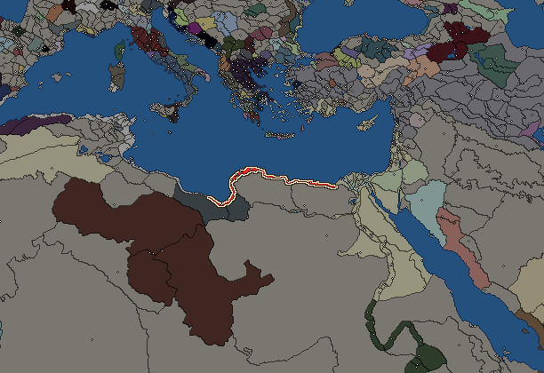
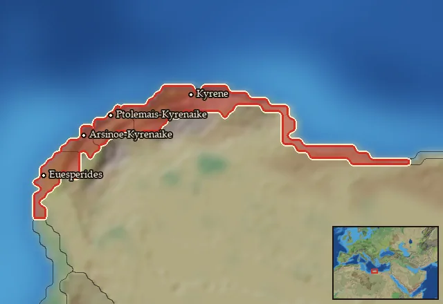

Cyrene


- difficulty Difficult
- Eastern Hellenistic culture
- believes
 Macedonian
Macedonian - 7 settlements
- capital Kyrene
- 22,300 manpower
- 8 characters
- 19 faction units
- 437 regional units
The campaign brief
"This, too, I order from you: tread the way that wagons do not trample. Do not drive in the same tracks as others or on a wide road but on an untrodden path, even if yours is more narrow." – Kallimachos, Aitia, fr. 1.23-30
Honourable members of the Kyrenean Politeuma, all ten thousand of which are here today; the esteemed gerontes, all five hundred of our council of elders; the five chosen strategoi, nine nomophylakes, five ephores, the five nomothetai, the high priest of Apollo ... lend your ears to me this day!
It has been six years since you bestowed royal powers on me, breaking faith with my wretched brother – he who calls himself Philadelphos, having bedded his own sister, after exiling his former wife and queen on charge of treason! This so-called marriage is a sacrilege to any civilized Greek, yet those who spoke against it, their only crime being to give voice to reason, have been exiled or assassinated. My late father Ptolemy would never have allowed for such a man to succeed him, had he only known his true nature.
You ask for further proof of their irreverence towards natural laws? Listen to the letters, here in my hands, both from the poet Sotades, who met with assassins' blades for this public denunciation of my brother's perfidious marriage, as well as from our exiled queen Arsinoe I, now spending her days in house arrest somewhere in upper Egypt, describing the most unnatural relations between brother and sister even before they were ultimately joined in marriage. Tales of their plotting to convict the queen of treason, of making her issue swear an oath to a new mother. I have carried these letters with me since the very start of my reign as your king, and it was because of the evidence they show that I went to war with my brother. A war you failed to support me in!
Citizens of Kyrene, of Taucheira, Euesperides, of Balagrai and Barke – for how long will you remain content with your little strip of land? Do you truly believe that a life of idle pleasures is the only one worth living? Do you truly not care for the world outside your own? Is getting rich with the silphium trade your only acceptable way of life? You neglect the outer world, except for when it is its assistance you are in need of!You pleaded with my father to save you from the tyranny of Thibron fifty years ago – he met with your exiled citizens and enacted justice upon the renegade, even respecting your laws for the rest of his reign. Many of you are here owing to my father's generosity towards your fathers! And yet they rebelled against him soon after, not once, but twice. After the second uprising, I was appointed by my father as your governor. I have been with you for thirty years now, lending an ear to your disputes, always adhering to your constitution and laws.
Now, it is my name that resonates across the world – the grand kings Seleukos and Antiochos have both supported my claim to my father's throne! Have I not the right of seniority over my brother? My marriage to the Seleucid princess Apama, the daughter of king Antiochos, is a testament to that claim! From across the Greek world, I receive deputations and offers of alliances and support. Even as far away as India, their great king Sandrokottos recognizes my rule as king and offers his friendship.
Why do you still waver in your support? I have pacified the Libyans that terrified you, even making allies and partners out of them, so that you don't have to worry about uprisings as long as I am king. I have opened further trading routes across the sea and across the desert, allowing your businesses to expand threefold. I am the first king you have had in a hundred and seventy years – do I not even now merit your trust?
Know this, honourable citizens – nothing lasts. If you do not support me now in my legitimate endeavour, you will once again come under the rule of a foreigner. One who isn't worthy of being a king in the first place! Then, I fear, your privileges, your constitution, and laws, will be subject to a much harsher life than the one your philosophers' debate would be one worth living for ...
Starting settlements
Cyrene begins with 7 settlements and 22,300 manpower.
| Settlement | Region | Size | Manpower | Already built | Settlement | Region | Size | Manpower | Already built |
|---|---|---|---|---|---|---|---|---|---|
| Kyrene (capital) | Kyrenaike | large city | 7,400 | 16 buildings | Paraitonion | Hesperos Aigyptos | town | 1,900 | 5 buildings |
| Euesperides | Euesperidai | town | 3,000 | 7 buildings | Ptolemais-Kyrenaike | Barke | city | 4,000 | 14 buildings |
| Automala | Hesperos Kyrenaike | town | 1,800 | 6 buildings | Tetrapyrgia | Katabathmos | town | 1,600 | 6 buildings |
| Arsinoe-Kyrenaike | Taucheira | large town | 2,600 | 11 buildings |
What is already built in each settlement
Kyrene, in Kyrenaike: Small School (Civic), Small Treasury, Pro-Consul's Palace, Stone Wall, Grain Export Silos (Food trade), Homeland, Region Information Scroll, Highways, Healing Sanctuary (Healing), Irrigation Aqueducts (Crops), Forum, Basic Armoury, Dockyard, Large Temple, Perfume Maker (Urban), Horse Breeder (Rural)
Paraitonion, in Hesperos Aigyptos: Governor's House, Direct Rule, Region Information Scroll, Local Barter, Trade Port
Euesperides, in Euesperidai: Governor's House, Homeland, Region Information Scroll, Local Barter, Trade Port, Date Palm Plantation (Rural), Irrigation Ditches (Crops)
Ptolemais-Kyrenaike, in Barke: Governor's Palace, Small Stone Wall, Waystations and Garrisons, Homeland, Region Information Scroll, Paved Roads, Physician's Clinics (Healing), Basin Irrigation (Crops), Local Market, Shipwright, Small School (Civic), Temple, Perfume Maker (Urban), Fruit Dryer (Rural)
Automala, in Hesperos Kyrenaike: Small Colony, Governor's House, Direct Rule, Region Information Scroll, Local Barter, Trade Port
Tetrapyrgia, in Katabathmos: Small Colony, Governor's House, Direct Rule, Region Information Scroll, Local Barter, Trade Port
Arsinoe-Kyrenaike, in Taucheira: Governor's Villa, Wooden Palisade, Local Garrisons, Homeland, Region Information Scroll, Roads, Irrigation Ditches (Crops), Local Barter, Trade Port, Shrine, Grape Orchards (Rural)
Homeland
Cyrene's homeland is 4 regions. Only there can it install the Homeland government (more on homelands).

Barke · Euesperidai · Kyrenaike · Taucheira
Starting diplomacy
Allied with (2):  Gortyn ·
Gortyn ·  Seleucid Empire
Seleucid Empire
Trade agreements with (2):  Gortyn ·
Gortyn ·  Seleucid Empire
Seleucid Empire
At war with (1):  Ptolemaic Empire
Ptolemaic Empire
Like every faction, it is also at war with the  Free Peoples, who hold every settlement no faction does.
Free Peoples, who hold every settlement no faction does.
Starting characters
| Name | Role | Age | Name | Role | Age | Name | Role | Age | Name | Role | Age |
|---|---|---|---|---|---|---|---|---|---|---|---|
| Magas | General | 50 | Ophellas | General | 20 | Hermokrates | General | 55 | Theodotos | General | 26 |
| Ptolemaios | General | 18 | Perseus | General | 30 | Apellas | General | 34 | Aristoteles | General | 38 |
Faction mechanics
From the game's own guide. See also the other game guides.
Special Mechanics
Cyrene has a mercenary centre in the capital, check its Region Information Building for more details.
Military reforms
Cyrene has two reforms.
Kyrenean reforms 1 requirements: Control 15 cities
Unlocks: Thureophoroi, Libyan Phalangites
Kyrenean reforms 2 requirements: 25 battles against Ptolemaic Egypt.
Unlocks: Kyrenaian Hypaspists, Kyrenaian Agema Phalangites
Reforms
For every faction: Military innovations have arrived!, Second wave of military innovations have arrived!.
Units you can recruit
The same as in the main campaign.